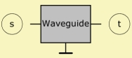

|
 |
| Purpose | Waveguide with variable cross-section |
| Type | Network element (2 pole) |
| Domain | Acoustic |
| Used in | System |
|
|
Waveguide 'Any Name'
Node=s=t
Len=
T=
dTh=
STh=
WTh= HTh=
dMo=
SMo=
WMo= HMo=
Vf=
The Waveguide component provides an acoustic duct with slowly increasing cross-section area.
The small part is called Throat and the large Mouth. Hence, we have parameters dTh=, STh= and WTh= HTh=, which specify the cross-section area for the throat. Parameters dMo=, SMo= and WMo= HMo= specify the size at the mouth. Len= is the distance between the throat and the mouth. The Waveguide can be wired forward and in reverse.
The Waveguide component supports the Salmon Horn Function family, which control parameter is T=.
The arithmetic makes use of the one-dimensional waveguide-model, see at parameter T=. In this model we do not make any assumptions about the shape of the cross-section because of the wave-function only the fundamental mode is applied. This works well as long as the opening is gradual compared with the length of the wave.
Hence, the length, Len= of the horn is typically simply its geometric length. If the horn is used as a transition in a system of ducts one can experiment with end-corrections. If it is radiating then the RadImp component provides the correct radiation load. Note, that the Waveguide component is an approximation. For more complicated structures we recommend to use the Boundary Element Method.
Although we have available parameters for different shapes, internally they will be converted to a cross-section area.
...
Duct "D1"
Node=100=200
WD=20mm HD=20mm
Len=60mm
Waveguide "W1"
Node=200=300
WTh=20mm HTh=20mm
WMo=20mm HMo=60mm
Len=50mm
Conical
Duct "D2"
Node=300=400
WD=20mm HD=60mm
Len=60mm
...
For example, we can use the Waveguide component for modeling transitions, here between Duct1 and Duct2.
 |
...
Waveguide "W1
Node=200=300
dTh=1in
WMo=1in HMo=2.8in
Len=4.3in
T=1.2
Vf=0.0007in3
...
Often the Waveguide component is used for modeling the phase-plug channels or the horn of a compression driver. For convenience, the parameter Vf= creates an acoustic compliance of volume Vf at the throat.